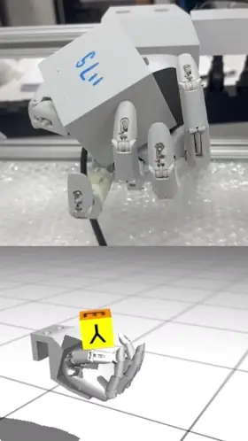
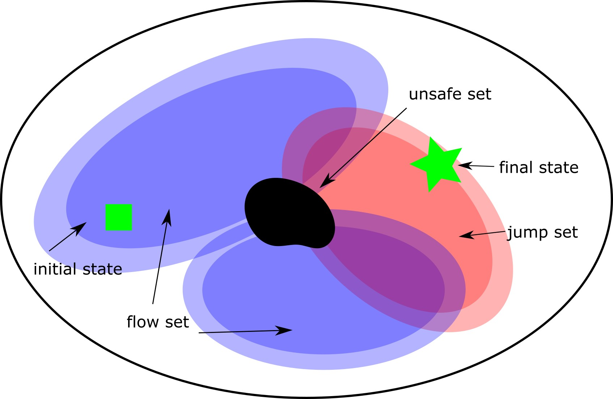
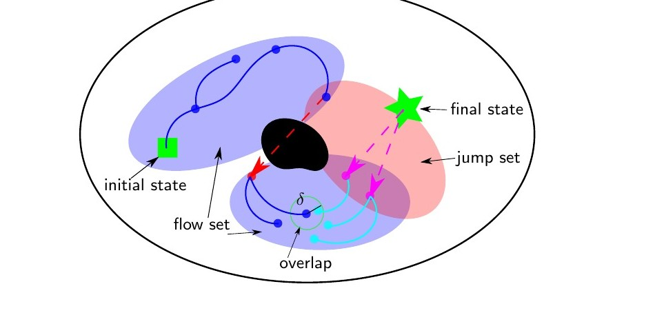
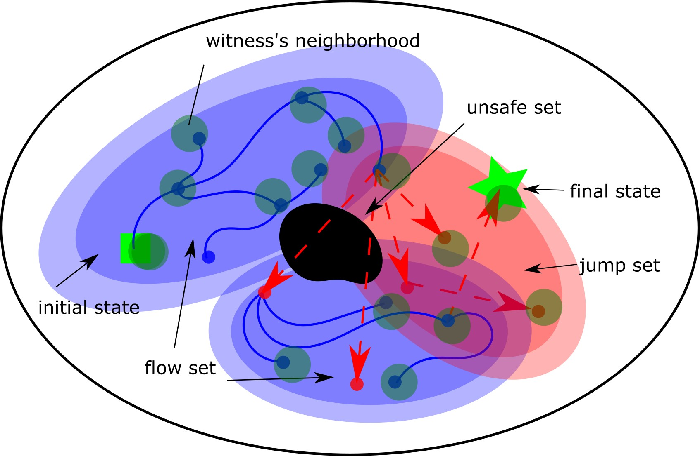
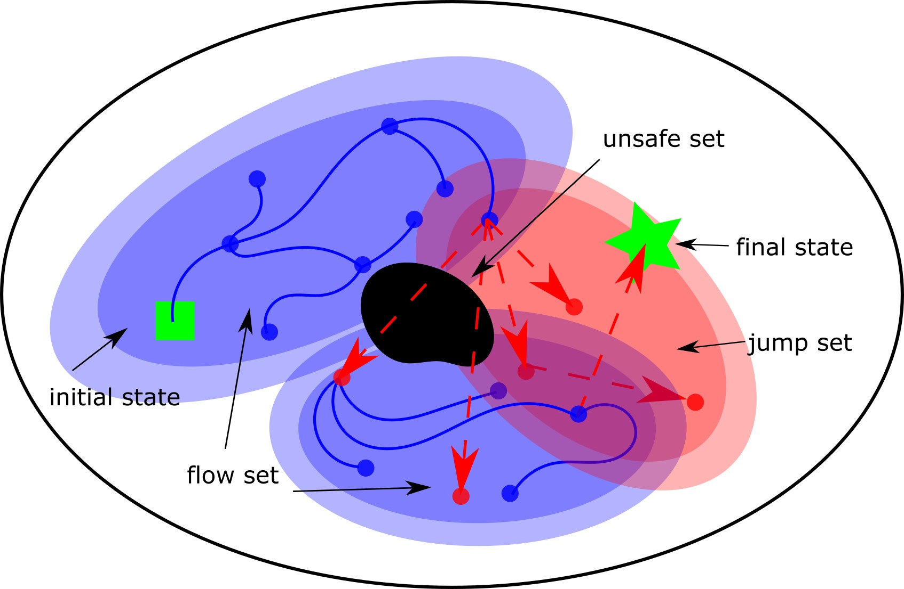
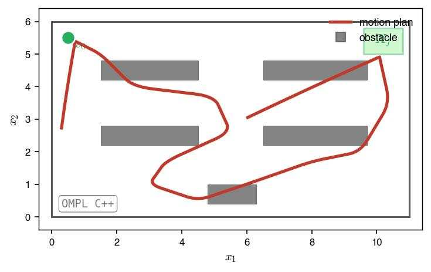
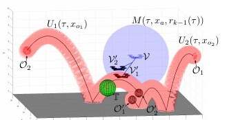
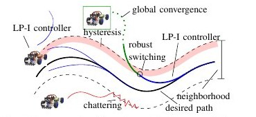

I am a Founding Robotics Engineer at Chestnut Robotics (formerly TetherIA AI), working on dexterous manipulation, sim-to-real reinforcement learning, and teleoperation systems for tendon-driven hands and humanoid robots.
I received my Ph.D. in Computer Science and Engineering from UC Santa Cruz in 2024, advised by Prof. Ricardo Sanfelice at the Hybrid Systems Laboratory. My dissertation, Provably Correct and Efficient Motion Planning for Hybrid Dynamical Systems, received the 2025 Cyber-physical Systems Research Center Best Dissertation Award.
Prior to UCSC, I obtained my M.S. in Control Science and Engineering from Tongji University and B.E. in Automation from East China University of Science and Technology. I also interned at Mitsubishi Electric Research Laboratories in 2023.
My research spans dexterous manipulation, reinforcement learning, sim-to-real transfer, motion planning, hybrid systems, model predictive control, and SLAM.

Built a high-fidelity MuJoCo/MJX model of the Tetheria Aero Hand Open with a fully modeled tendon transmission system (spatial-tendon drives, springs, and pulleys), enabling underactuated control where a single tendon drives multiple joints. Developed a dexterous cube manipulation environment with Z-axis rotation, merged into MuJoCo Playground as an example task. Calibrated MuJoCo tendon actuation against real motor commands to achieve zero-shot sim-to-real policy transfer on the physical hand.

Formulated a unified motion planning framework for hybrid dynamical systems using a hybrid equation framework, enabling reasoning about motion planning tasks under different specifications and complex dynamics constraints within a single problem-data structure.

Achieved an average 77.0% improvement in computational time and 80.1% reduction in vertex creation over standard RRT through bidirectional forward–backward propagation, demonstrated on bipedal robots and an actuated bouncing ball.

Improved computation time by 82.1% and vertex creation by 77.0% through vertex sparsification, with proven asymptotic near-optimality, demonstrated on collision-resilient aerial vehicles.

An RRT-based algorithm specifically designed for hybrid systems with proven probabilistic completeness, achieving a 95.5% performance improvement. Integrated into OMPL; the C++ implementation runs in 251 ms on a 6-D walking-robot problem (vs. 54.7 s in MATLAB).

Open-source C++ implementations of HyRRT and HySST in OMPL/ROS, illustrated on a modified pinball game and a collision-resilient tensegrity multicopter.

A receding-horizon planner for quadrotors that builds a safe mobility set from reachable sets of obstacles with hybrid dynamics, selecting the lowest-cost trajectory while avoiding moving obstacles with uncertain velocities.

A hybrid framework combining a local path-invariant controller (via control Lyapunov and control barrier functions) with a global tracking controller, guaranteeing global convergence, path invariance, and robustness to sensor noise.
A switched reference governor that toggles between a fast oscillating RG and a slow non-oscillating RG to achieve fast and non-oscillating convergence under state and input constraints, with established recursive feasibility and strong robustness. Work conducted during my internship at MERL.
A novel trajectory planning algorithm leveraging fluid-flow field information for smooth navigation, reasoning about traffic scenarios from a Computational Fluid Dynamics (CFD) perspective. Two patents granted.
Added the HyRRT and HySST algorithms into one of the most widely used open-source motion-planning frameworks in robotics research, providing accessible implementations of hybrid-systems motion planners for the global community.